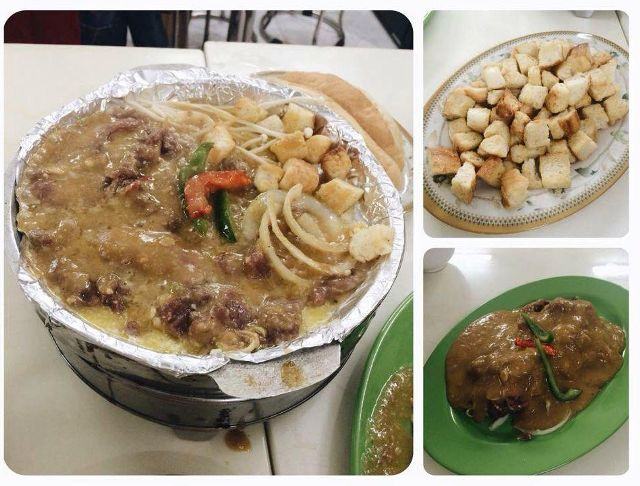

-

TỔNG HỢP 20 QUÁN ĂN VẶT NGON
Những món ăn vặt quen thuộc đối với học sinh, sinh viên Hà Nội nói riêng và cả người dân Hà Nội nói chung... Xem chi tiết» -

NEM ỐC
Cuối tuần rồi hãy đổi món cho cả nhà với nem ốc giòn sừn sựt ngon cực kỳ. Rất hợp để ăn chơi hoặc ăn kèm với bún nhé! Xem chi tiết» -

TRÀ ĐÀO
Có thể nói trà đào là một loại thức uống không bạn tuổi teen nào lại không biết đến.. Xem chi tiết »
-

KEM MATCHA TRÀ XANH
Matcha trà xanh thơm ngon và đầy dinh dưỡng ,ăn vừa mát, bổ và nếu ai đã thích hương vị trà xanh rồi thì sẽ nghiện món kem thơm ngon này!! Xem chi tiết » -

BÒ NHÚNG ME
Bò nhúng me đem hương vị Tây Nguyên đến Hà Nội với món bò nhúng nước sốt me độc đáo ăn kèm rau rừng sẽ làm cho bạn ấn tượng nhớ mãi Xem chi tiết » -

TRỨNG CHÉN NƯỚNG CÔ TY
Trứng chén nướng xuất hiện ở miền Trung và miền Nam đã khá lâu, thế nhưng món ăn này vẫn còn rất lạ lẫm với các bạn ngoài Bắc đặc biệt ở Hà Nội. Xem chi tiết»